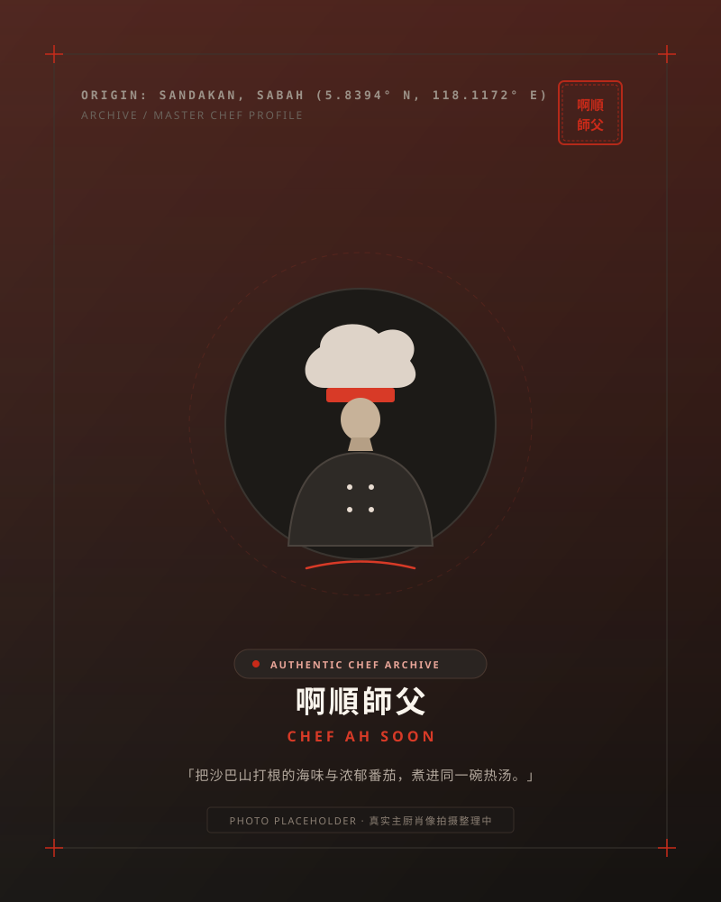

一碗来自沙巴的
番茄海鲜面
由沙巴山打根啊顺师父主理。天然番茄温火慢熬浓郁红汤，严选生猛海虾与鲜嫩海鱼，现点现煮滚沸上桌！在吉隆坡蕉赖，随时大口嗦面，鲜到上头！
测测你今天的番茄海鲜专属搭配
招牌番茄海鲜面 (全料王)
啊顺师父力推！生猛鲜虾与嫩滑鱼肉汇聚一碗，红汤挂面，鲜到上头！
为什么是番茄汤？
纯天然番茄慢火熬煮，释放出温润自然的果酸，瞬间祛腥提味，第一口喝下舌底生津、食欲大开！
生猛海虾与厚切海鱼在滚烫红汤中现煮，鲜汁遇上酸汤，把海产深层的天然甘美彻底激发，回味无穷！
热气腾腾，每一根面条都吸饱了高汤精粹。没有厚重油脂负担，只有让人大呼「鲜到上头」的酣畅淋漓！

山打根原味传承从山打根，到 Cheras
啊顺师父来自沙巴山打根。在海港之城长大，师父对海鲜的挑剔与对海味的敏感早已刻进骨子里。
从熟悉的海鲜风味，到这一锅反复调整配比的招牌番茄高汤，师父希望把自己熟悉的沙巴味道带给更多懂得品尝的食客。
在 Cheras，就能吃到这一碗沙巴风味番茄海鲜面。
这一碗的品尝节奏
一口番茄汤
先喝一口滚烫酸香的红汤，果酸唤醒味蕾，暖胃生津。
一口海鲜
咬一口脆弹海虾与嫩滑鱼片，海味甘甜在酸汤烘托下层层爆发。
一口爽面
大口嗦面！面条吸饱浓厚茄汁，每一口都是踏实的满足感！
先是番茄的酸香 · 然后是海鲜的鲜甜 · 最后是面吸满汤汁的满足感
Come Find Us
门店位置 Address
番茄仔 Tomato Boy · Cheras, Kuala Lumpur
马来西亚 吉隆坡 蕉赖 (具体商铺号及试营业日期即将公布)
营业时间 Opening Hours
试营业筹备中 · 每日 10:30 AM – 9:30 PM (周一至周日)
停车便利 Parking
周边设有街区泊车位及便利停车设施，安心到店享用。
常见问题 FAQ
今天，就来喝一碗番茄汤。
番茄仔 Tomato Boy · 沙巴番茄海鲜面
番茄够浓，海鲜够猛！我们在 Cheras 等你开饭。